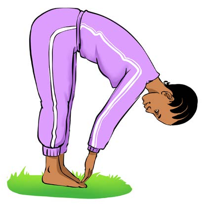
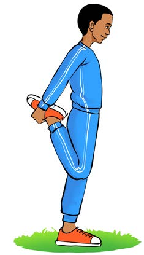

2. Kunyoosha sehemu ya mbele ya paja:
(a) Simama kwa mguu mmoja na kunja mguu mwingine kuelekea nyuma;
(b) Shika kifundo cha mguu ulioinua na kukivuta kuelekea nyuma, kama inavyoonekana katika Kielelezo namba 3;
(c) Shikilia kwa sekunde 10 hadi 15; na
(d) Badilisha miguu na kurudia hatua hizo.
